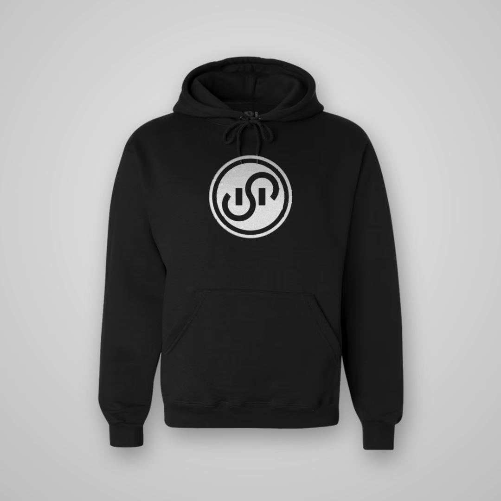
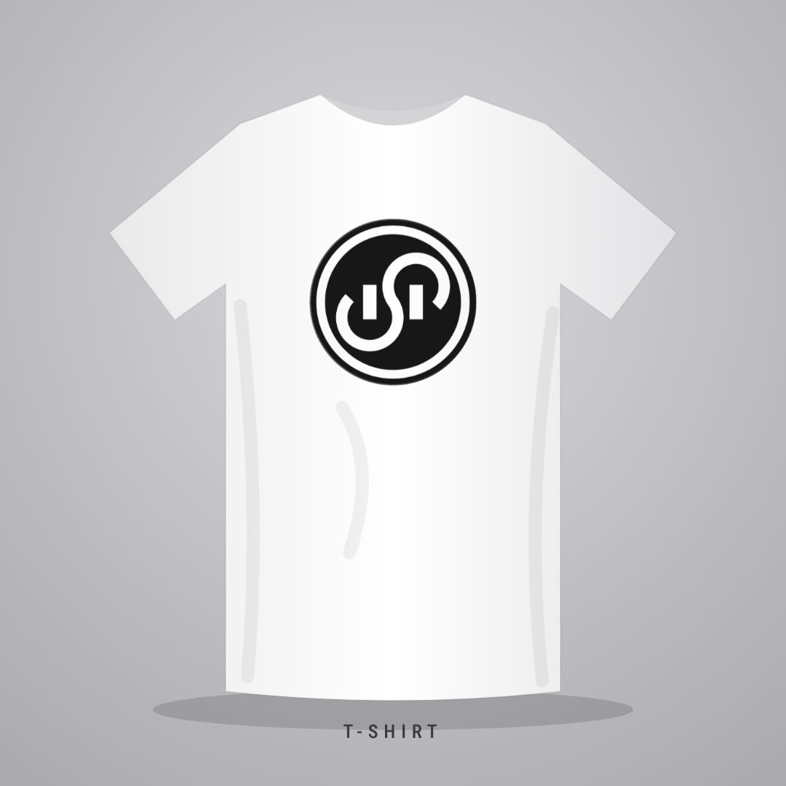
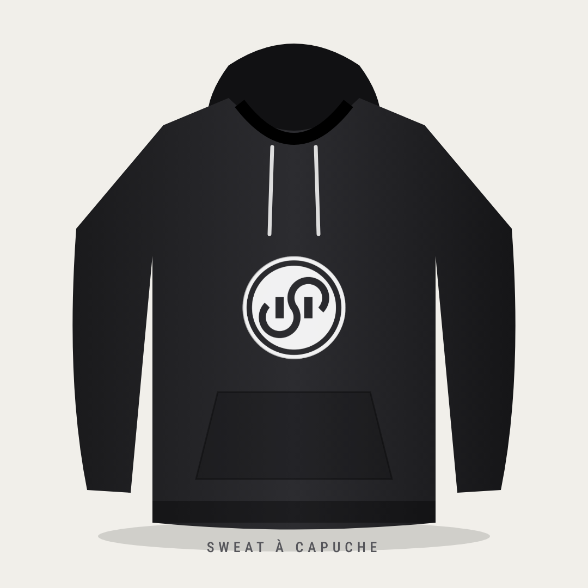
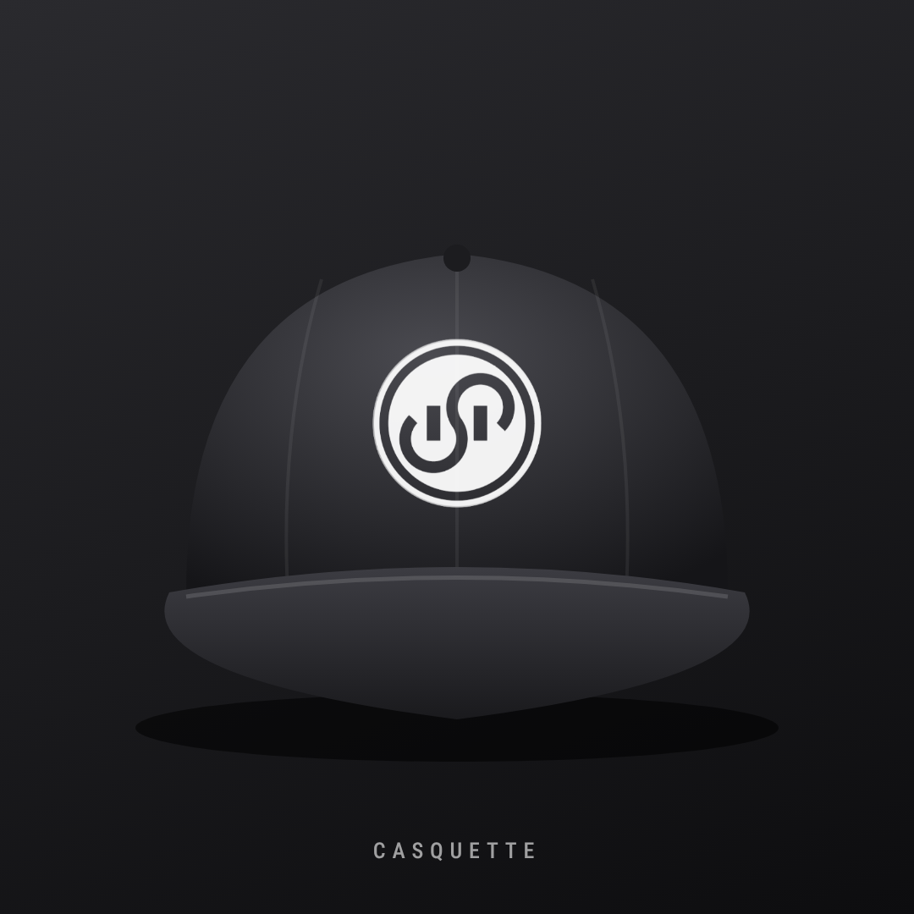
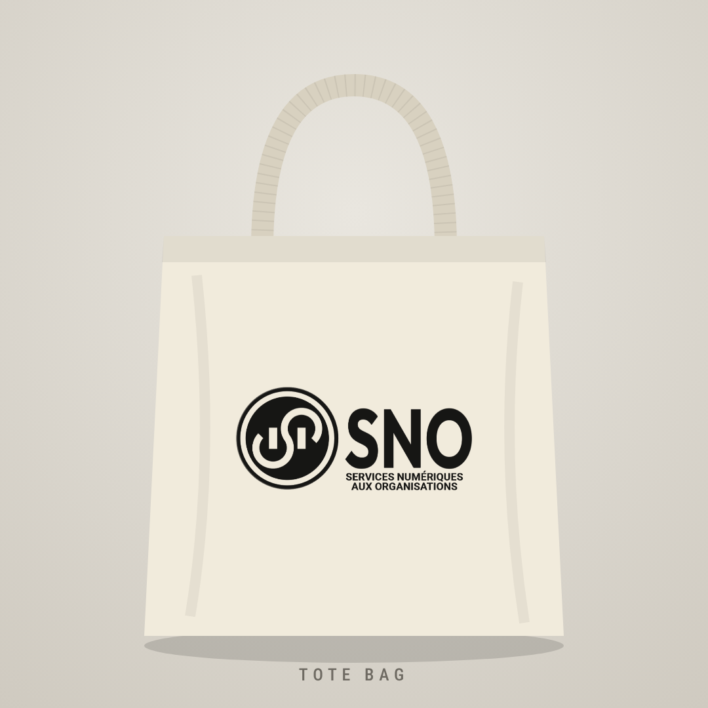
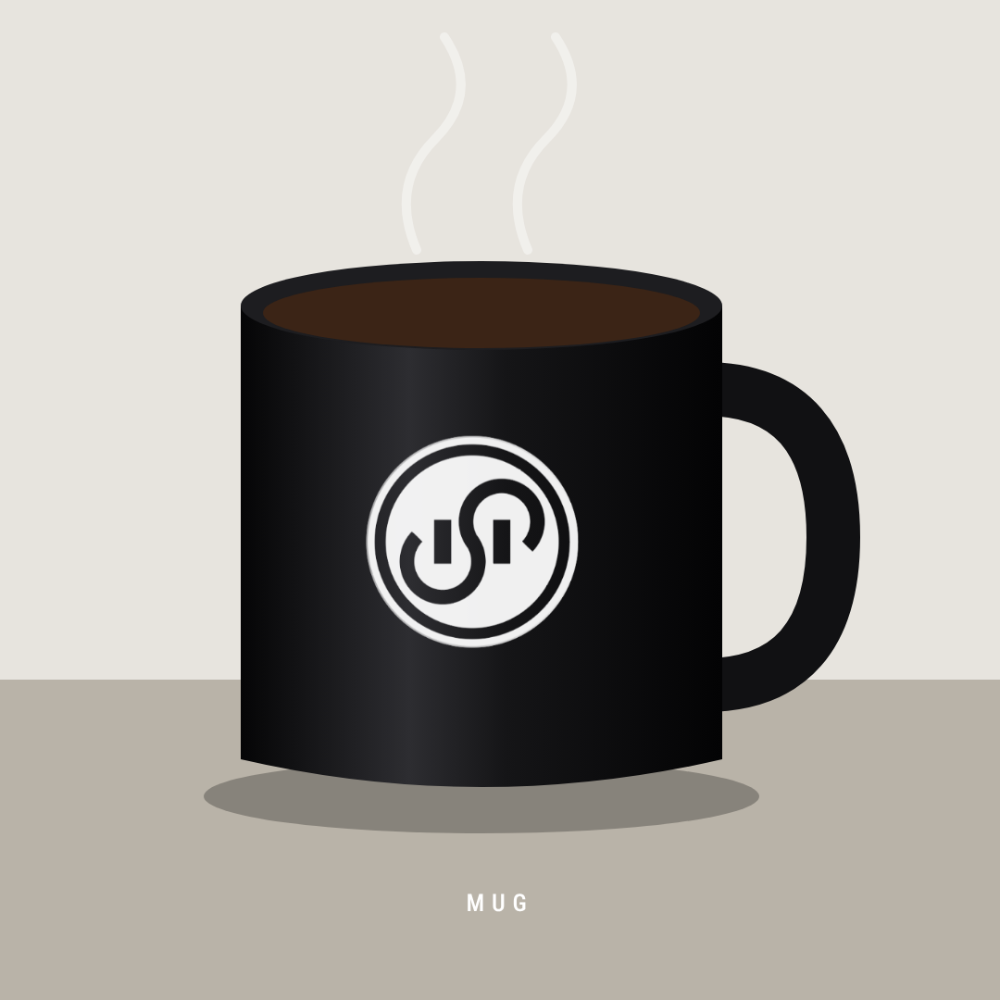

SNO · SuivreÀ l’instant · Public
Services Numériques aux OrganisationsS’abonner
J’aimeCommenterPartager
La publication de lancement pour Facebook et Instagram : 5 visuels du logo mis en situation, un texte qui raconte l’histoire et un appel à s’abonner.
L’histoire du nouveau logo, avec l’appel à s’abonner à la fin.
On a changé de tête. Ça faisait un moment qu’on en parlait : notre ancien logo ne nous ressemblait plus trop. Alors on s’y est mis. Voici le nouveau SNO. Le S qui tourne dans le cercle, c’est un peu notre quotidien : on branche, on répare, on configure, pour que vos outils marchent et que vous puissiez vous occuper du reste. Et oui, au milieu, c’est bien un bouton d’allumage. Pour le reste, rien ne bouge : les mêmes personnes, les mêmes services. On vous montre bientôt la suite. Pour ne pas la rater, abonnez-vous à la page. #SNO #NouveauLogo
Plus court : sur Instagram, seules les 2 premières lignes s’affichent.
Nouveau logo. Toujours les mêmes derrière. Le S qui tourne dans le cercle, c’est ce qu’on fait tous les jours : brancher, réparer, et faire en sorte que votre numérique tourne. Au milieu, oui, c’est un bouton d’allumage. Abonnez-vous pour voir la suite. #SNO #NouveauLogo #Numérique
Six mises en situation de plus, dont une sur une vraie photo de sweat, à ajouter à la publication ou à garder pour un deuxième post (par exemple « Le merch SNO arrive »). Même format carré 1080 × 1080.





